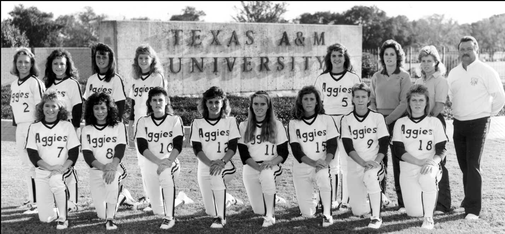
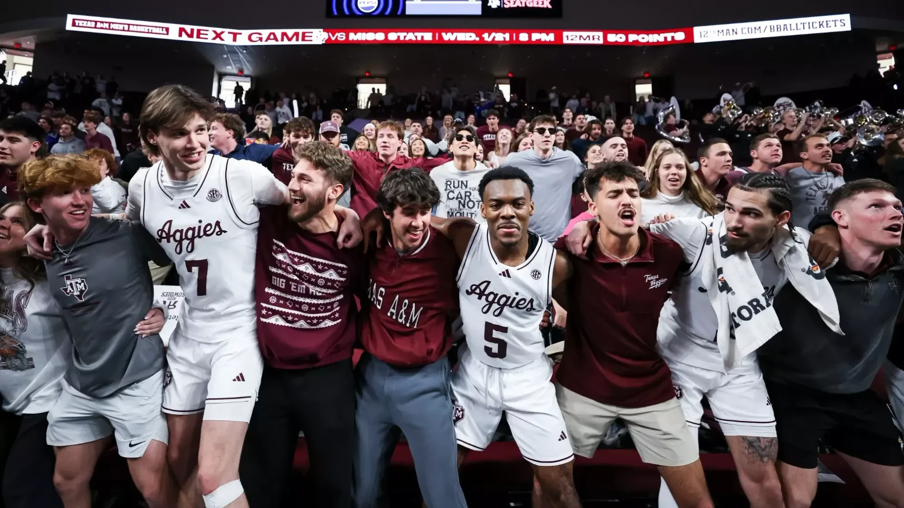

TEXAS A&M / INTERACTIVE STORIES
More than
a moment.
Teams. People. Seasons that stay with us.
A growing collection of experiences for Aggieland.
3 experiences
2006—07 / MEN’S BASKETBALLA different
standard.01 / IV
standard.01 / IV
A different standard.
↗Acie Law IV and the team that brought a new generation of Aggies to the Sweet Sixteen.
SEASON EXPLORER / TEAM / KEY MOMENTSOPEN EXPERIENCE

1987 / SOFTBALLForeverchampions.1987—2027
Forever champions.
↗Return to the 1987 championship season and the team whose place in Aggie history endures.
TEAM / SEASON / CHAMPIONSHIPOPEN EXPERIENCE

MARCH 7, 2026 / AT LSUGriffen.24.THREE OVERTIMES / ONE NIGHT
A game to remember.
↗Rylan Griffen’s 24-point night in A&M’s triple-overtime win at LSU, explored through the moments and numbers.
GAME STORY / PERFORMANCE LABOPEN EXPERIENCE
No stories found.
Try another name, year or sport.